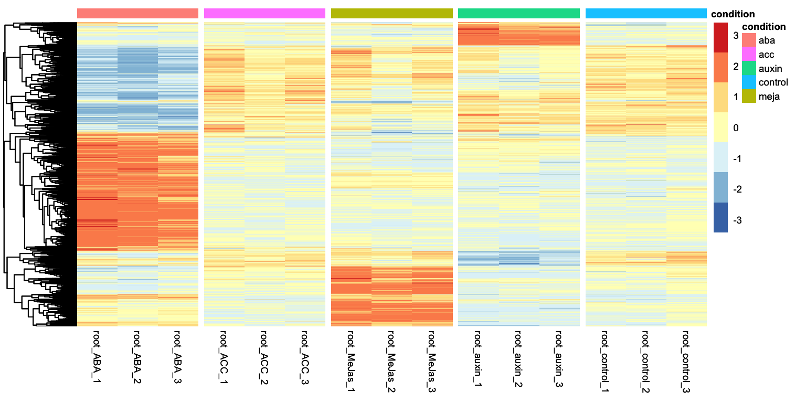
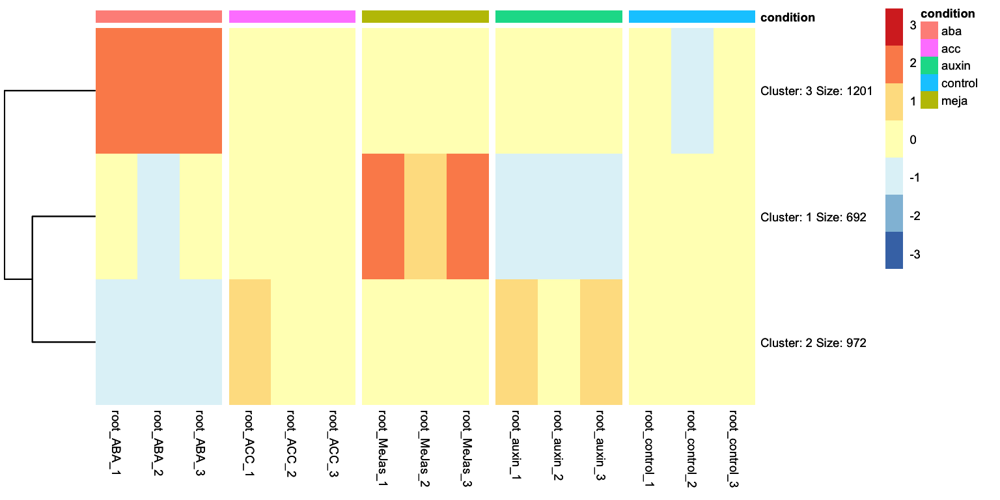
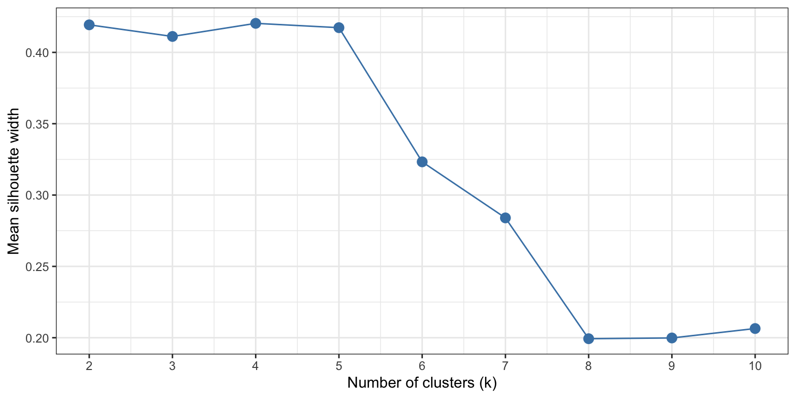

Under construction - this workshop is complete but in beta test phase.
Choosing optimal number of clusters
In the Differential gene expression episode we ended with a heatmap displaying the expression patterns of all genes that were considered DEGs in any condition with respect to the control condition. Let’s get to that point here:
Show the code to get to the starting point of this appendix
R
set.seed(1992)# Load packageslibrary(DESeq2)library(tidyverse)library(tidyheatmaps)# Read the dataraw_counts <-read.csv("data/Deforges_2019-raw-counts.csv", header = T, stringsAsFactors = F) raw_counts <- raw_counts %>%column_to_rownames("Geneid") metadata <-read.csv("data/Deforges_2019-experiment-design.csv", header = T)# Generate DDS object and run DESeq function:dds <-DESeqDataSetFromMatrix(countData = raw_counts, colData = metadata, design =~ condition)dds <-DESeq(dds)# Run DEG analysis for all hormone treatments for all hormone treatments vs controlcontrast_to_test <-c("condition", "aba", "control")res_aba_vs_control <-results(dds, contrast=contrast_to_test, alpha =0.05)contrast_to_test <-c("condition", "auxin", "control")res_auxin_vs_control <-results(dds, contrast=contrast_to_test, alpha =0.05)contrast_to_test <-c("condition", "meja", "control")res_meja_vs_control <-results(dds, contrast=contrast_to_test, alpha =0.05)contrast_to_test <-c("condition", "acc", "control")res_acc_vs_control <-results(dds, contrast=contrast_to_test, alpha =0.05)# Create DEG lists for all hormone treatments vs controlpadj_cutoff =0.05lfc_cutoff =1.5DEGs_aba <- res_aba_vs_control %>%as.data.frame() %>%rownames_to_column("geneID") %>%filter(padj < padj_cutoff) %>%filter(abs(log2FoldChange) > lfc_cutoff) %>%pull(geneID)DEGs_meja <- res_meja_vs_control %>%as.data.frame() %>%rownames_to_column("geneID") %>%filter(padj < padj_cutoff) %>%filter(abs(log2FoldChange) > lfc_cutoff) %>%pull(geneID)DEGs_auxin <- res_auxin_vs_control %>%as.data.frame() %>%rownames_to_column("geneID") %>%filter(padj < padj_cutoff) %>%filter(abs(log2FoldChange) > lfc_cutoff) %>%pull(geneID)DEGs_acc <- res_acc_vs_control %>%as.data.frame() %>%rownames_to_column("geneID") %>%filter(padj < padj_cutoff) %>%filter(abs(log2FoldChange) > lfc_cutoff) %>%pull(geneID)# Combine DEG list to get one master list containing all IDs of all DEGsall_DEGs <-unique(c(DEGs_aba, DEGs_auxin, DEGs_meja, DEGs_acc))# Get variance stabilized data and subset for plotting heatmapvariance_stabilized_dataset <-vst(dds, blind =TRUE)variance_stabilised_counts <-assay(variance_stabilized_dataset)variance_stabilised_df <- variance_stabilised_counts %>%as.data.frame() %>%rownames_to_column("gene") %>%pivot_longer(cols =- gene, names_to ="sample", values_to ="count") vsd_selection <- variance_stabilised_df %>%filter(gene %in% all_DEGs) %>%merge(metadata, by ="sample")# finally, plot itheatmap <-tidyheatmap(df = vsd_selection,rows = gene,columns = sample,values = count,scale ="row",annotation_col =c(condition),gaps_col = condition,cluster_rows =TRUE,color_legend_n =7,show_rownames =FALSE,show_colnames =TRUE)heatmap

Looking at the heatmap, we can identidy clusters of genes with similar gene expression levels. For example, we can separate the ABA differentially expressed genes in two clear clusters: one group is upregulated and another group is downregulated. We can ask tidyheatmaps to aggregate these genes into a cluster using the k-means clustering algorithm. We have to specify the number of cluster we want to use beforehand, lets try 3 here:
This line of code is new! And it invokes the clustering algorithm, with the number of clusters you want as an argument.
2
We change this from FALSE to TRUE: we no longer have gene names as rownames, but cluster names with relevant information such as the number of genes in that cluster.

This clustered heatmap is a useful starting point. It allows us to extract the gene IDs within each cluster, for example, to do GO-term enrichment analysis per cluster. But, how well does this clustering actually reflect the underlying structure of the data? One potential issue is overclustering: where genes that would actually belong to different clusters are forced into the same cluster. In this case, that’s probably true: by eye, we could consider that this dataset consists of four, perhaps five, biologically meaningful clusters. In this appendix we will explore more systematic approaches for determining the optimal number of clusters.
Method 1: the Elbow method
The elbow method evaluated clustering quality by calculating the Within-Cluster Sum of Squares (WCSS) – the total squared distance of each data point to the center of its assigned cluster – across a range of k values. The WCSS always declines with increasing k, but we are looking for the value of k where the rate of decrease sharply flattens, forming an ‘elbow’ in the curve. To do this with our gene expression data, we need the variance stabilized counts of the DEGs only, and perform a series of k-means cluster analyses.
As expected, the WCSS decreases with increasing k. However, the ‘elbow’ in the curve is not always easy to recognize. This is a common situation for real world, high-dimensional datasets such as transcriptomics.
Method 2: the Silhouette method
The silhouette method calculates for each gene how similar it is to others in its own cluster, versus how similar it is to genes in the nearest neighbouring cluster, resulting in a score between -1 and 1. A score near 1 indicates that a gene is well-placed within its cluster, while scores near 0 or lower suggest that the gene sits on the boundary between two clusters, or possibly, is misclustered. The mean silhouette score of all genes in the dataset gives a quantification of clustering quality at that number of k.
Let’s calculate this value for a range of k values, this time from 2-10.
library(cluster)k_range <-2:10dist_mat <-dist(mat_scaled) # pre-computed once, reused for every Ksil_scores <-sapply(k_range, function(k) { km <-kmeans(mat_scaled, centers = k, nstart =25, iter.max =100) sil <-silhouette(km$cluster, dist_mat)mean(sil[, 3]) # column 3 is the silhoutte width per datapoint, we need the mean of all datapoints.})sil_df <-data.frame(k = k_range, silhouette = sil_scores)ggplot(sil_df, aes(x = k, y = silhouette)) +geom_line(colour ="steelblue") +geom_point(size =3, colour ="steelblue") +scale_x_continuous(breaks = k_range) +labs(x ="Number of clusters (k)",y ="Mean silhouette width") +theme_bw()

This plot shows that low values of k (2-5) give similar, positive, silhouette scores. Above 5, the silhouette scores rapidly declines. This gives quantitive evidence for our initial guess by eye: this dataset is best clustered in, at maximum, 5 clusters.